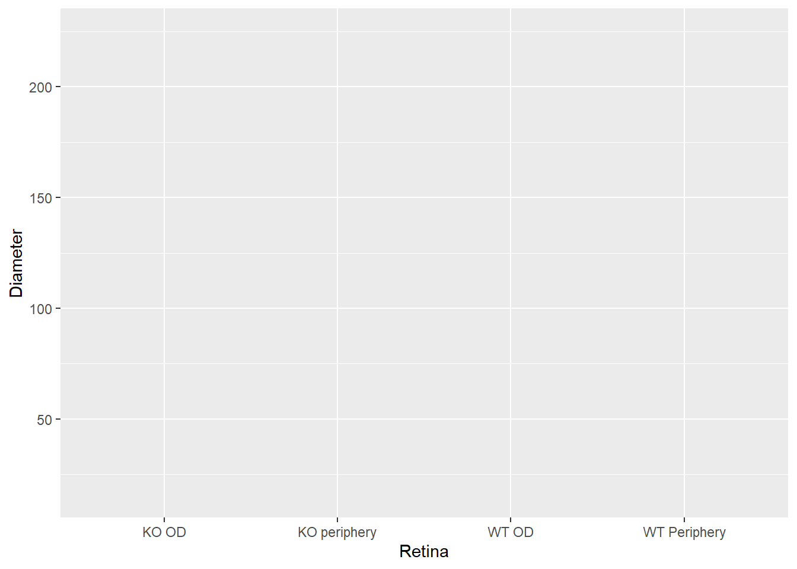
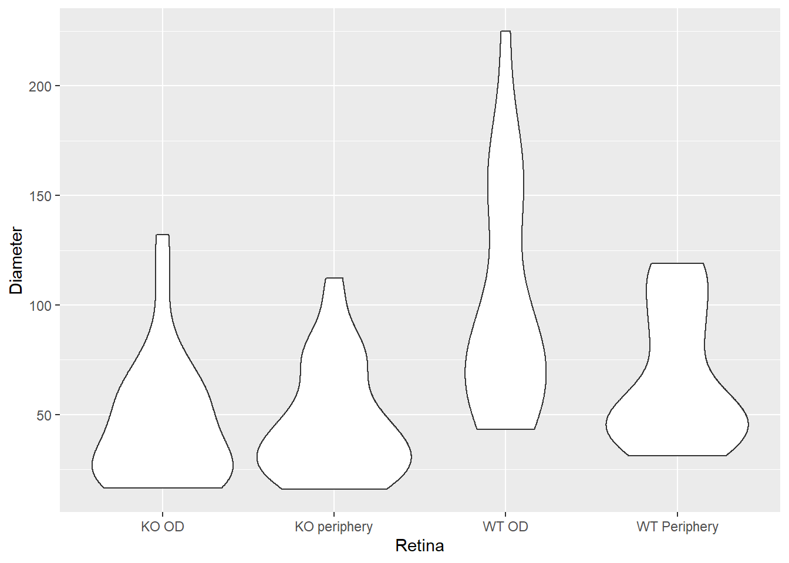
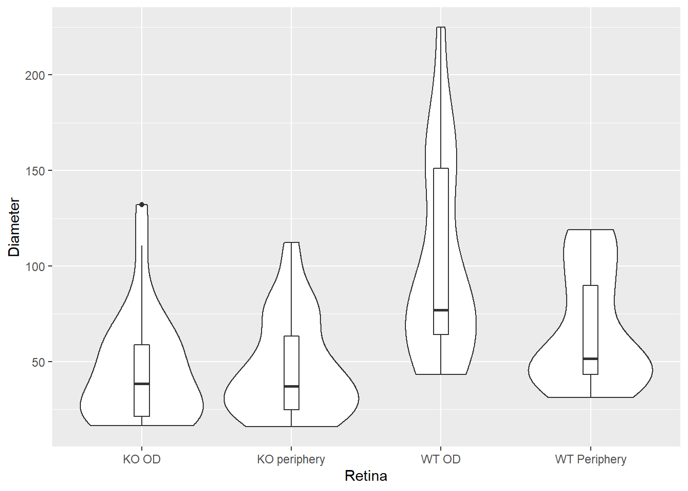
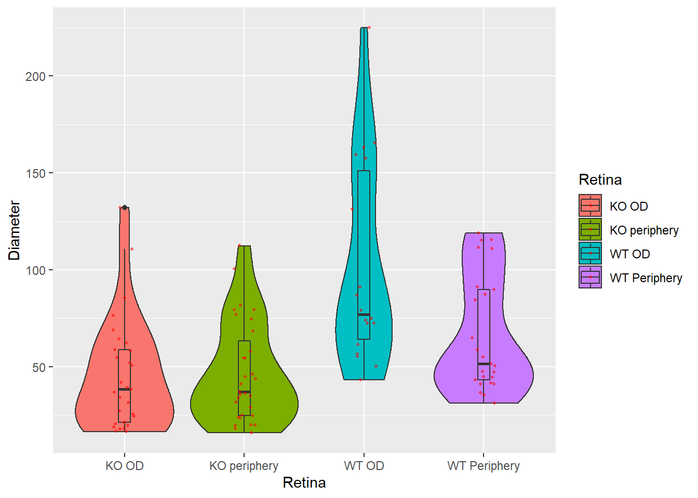
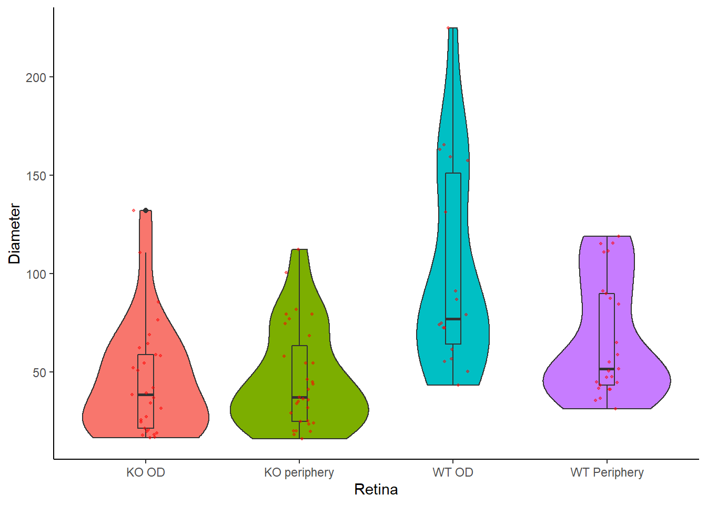
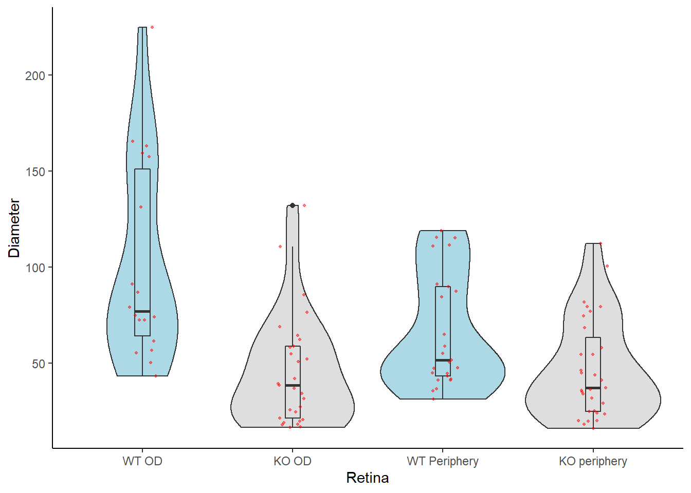
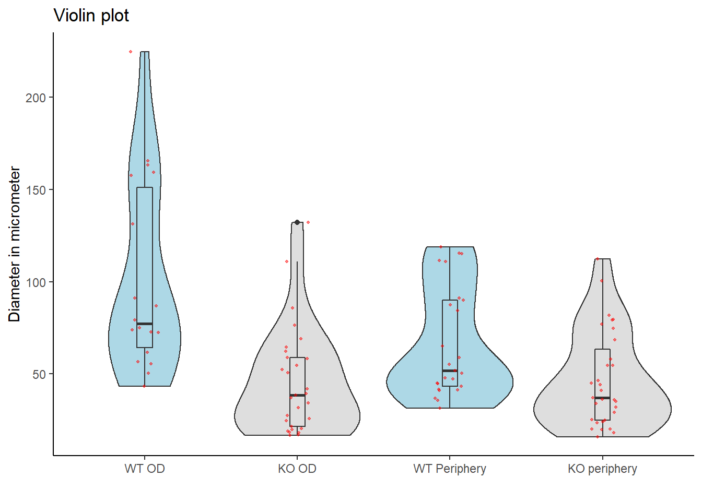

Budhaditya Basu.
Open RStudio, select File/New File/R Script and start writing your script with the help of this tutorial.
library(ggpubr)The tab delimited data frame ‘axon.txt’ is assigned to a vector df.
df <- read.csv("axon.txt", sep = "\t", header = TRUE)
#The columns are tab separated, and contains headerTo check the first few data, we can use head() function.
head(df)## Retina Diameter
## 1 WT OD 73.92
## 2 WT OD 61.52
## 3 WT OD 91.21
## 4 WT OD 72.56
## 5 WT OD 79.24
## 6 WT OD 55.31To plot the data, we use ggplot() function. Define the X and Y axis within aes()
ggplot(data = df, aes(x=Retina, y=Diameter))
Let’s add the code for the type of graph we need. We are going to plot a violin plot. So the code will look like the following.
ggplot(data = df, aes(x=Retina, y=Diameter))+
geom_violin()
To add a box plot within the violin plot:
ggplot(data = df, aes(x=Retina, y=Diameter))+
geom_violin()+
geom_boxplot(width = 0.1)
Change violin plot colors by groups within the column ‘Retina’
ggplot(data = df, aes(x=Retina, y=Diameter, fill = Retina))+
geom_violin()+
geom_boxplot(width = 0.1)If we want to see individual data points along with the previous plot, add jitters to it.
p <- ggplot(data = df, aes(x=Retina, y=Diameter, fill = Retina))+
geom_violin()+
geom_boxplot(width = 0.1)+
geom_jitter(position=position_jitter(0.1),
color="red", size=0.7, alpha=0.5) # 0.1 : degree of jitter in x direction
p
p +
theme_classic()+
theme(legend.position = "none")
Change the order of groups in the X axis and give defined colors to it
p +
theme_classic()+
theme(legend.position = "none")+
scale_x_discrete(limits=c("WT OD", "KO OD" ,"WT Periphery", "KO periphery")) +
scale_fill_manual(values=c("gray87", "gray87", "lightblue", "lightblue"))
p +
theme_classic()+
theme(legend.position = "none")+
scale_x_discrete(limits=c("WT OD", "KO OD" ,"WT Periphery", "KO periphery")) +
scale_fill_manual(values=c("gray87", "gray87", "lightblue", "lightblue"))+
ggtitle("Violin plot") +
xlab("")+ ylab("Diameter in micrometer")
This plot can be found in the following article:
Pax6 Modulates Intra-Retinal Axon Guidance and Fasciculation of Retinal Ganglion Cells during Retinogenesis
nature.com/articles